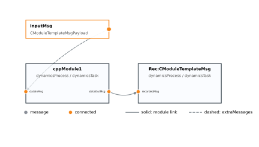
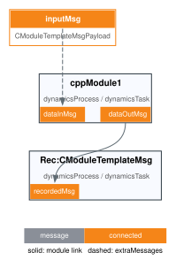

Visualizing Message Connections
The previous tutorial, Creating Stand-Alone Messages, shows how to create stand-alone messages and subscribe
module input messages to them. Once a simulation grows beyond a few modules it can be difficult to
verify that every input is subscribed to the expected output or stand-alone message. The
SimulationBaseClass helper ShowMessageConnectionFigure can create a compact Matplotlib
figure or a Graphviz-rendered file that shows the configured module message flow.
The message flow diagram is an inspection tool. It does not change task execution, message connections, message logging, or the simulation results. It can be called after the simulation objects have been created and added to tasks, either before or after the simulation is executed.
The sample script below creates a module, connects a stand-alone input message, and records the
module output message. The stand-alone input message is supplied through extraMessages so the
diagram can draw where the module input is connected.
1
2import os
3import shutil
4
5import matplotlib.pyplot as plt
6from Basilisk.architecture import messaging
7from Basilisk.moduleTemplates import cppModuleTemplate
8from Basilisk.utilities import SimulationBaseClass
9from Basilisk.utilities import macros
10from Basilisk.utilities import simHelpers
11
12
13def make_graphviz_figure(scSim, inputMsg, show_plots=False):
14 """Create the optional Graphviz tutorial output if Graphviz is available."""
15 if shutil.which("dot") is None:
16 return None
17
18 return simHelpers.saveScenarioGraphvizFigure(
19 "bsk-5a-graphviz",
20 scSim,
21 os.path.dirname(os.path.abspath(__file__)),
22 show_plots=show_plots,
23 graphvizLayout="vertical",
24 extraMessages={"inputMsg": inputMsg},
25 includeUnlinked=False,
26 includeRecorders=True,
27 )
28
29
30def run(show_plots=False):
31 """Illustrate Basilisk message connection visualization."""
32
33 # Create a simulation container.
34 scSim = SimulationBaseClass.SimBaseClass()
35
36 # Create the simulation process and task.
37 dynProcess = scSim.CreateNewProcess("dynamicsProcess")
38 simulationTimeStep = macros.sec2nano(1.0) # [ns]
39 dynProcess.addTask(scSim.CreateNewTask("dynamicsTask", simulationTimeStep))
40
41 # Create a module with one input message and one output message.
42 mod1 = cppModuleTemplate.CppModuleTemplate()
43 mod1.ModelTag = "cppModule1"
44 scSim.AddModelToTask("dynamicsTask", mod1)
45
46 # Create a stand-alone input message and connect it to the module input.
47 msgData = messaging.CModuleTemplateMsgPayload(dataVector=[1.0, 2.0, 3.0])
48 inputMsg = messaging.CModuleTemplateMsg().write(msgData)
49 mod1.dataInMsg.subscribeTo(inputMsg)
50
51 # Add a recorder so the diagram also shows a regular module output link.
52 msgRec = mod1.dataOutMsg.recorder()
53 scSim.AddModelToTask("dynamicsTask", msgRec)
54
55 # The message connection figure is optional and inspects the setup without
56 # changing the simulation execution or logging behavior.
57 figureList = {}
58 figureList["bsk-5a"] = scSim.ShowMessageConnectionFigure(
59 show_plots=show_plots,
60 extraMessages={"inputMsg": inputMsg},
61 includeUnlinked=False,
62 includeRecorders=True,
63 )
64
65 # Graphviz writes a file rather than returning a Matplotlib figure. The
66 # tutorial uses this optional file to show the Graphviz renderer result.
67 make_graphviz_figure(scSim, inputMsg, show_plots)
68 plt.close("all")
69
70 return figureList
71
72
73if __name__ == "__main__":
74 run(True)
Running the script returns the following Matplotlib figure.

If Graphviz is installed, the same script also writes the following Graphviz-rendered SVG file.
The sample uses unitTestSupport.saveScenarioGraphvizFigure so documentation images are saved
to the standard scenario image folder. When show_plots is True, the tutorial displays both
the Matplotlib figure and the saved Graphviz output.

Creating the Figure
The figure is created with:
fig = scSim.ShowMessageConnectionFigure(
show_plots=False,
extraMessages=None,
includeUnlinked=True,
includeRecorders=True,
renderer="matplotlib",
fileName=None,
graphvizFormat="svg",
graphvizLayout="vertical",
)
With the default renderer="matplotlib" option, the return value is the Matplotlib figure object.
This lets a scenario return the figure in its figureList dictionary for automatic documentation,
or save the figure using the normal Matplotlib interface.
The options are:
show_plotsIf this is
True, the figure is displayed withplt.show(). Scenario and documentation tests normally set this toFalseand return the figure instead.extraMessagesOptional stand-alone source messages to include in the graph. This can be a dictionary such as
{"vehicleConfigMsg": vcMsg}, or a list of dictionaries such as[{"vehicleConfigMsg": vcMsg}, {"rwConfigMsg": fswRwParamMsg}]. The dictionary keys become the labels used in the figure. Use this option for stand-alone messages that are not owned by a module, such as vehicle configuration messages, reaction wheel configuration messages, commanded torque messages, or an epoch message. Connections from these supplied messages are drawn with dashed lines.includeUnlinkedIf this is
True, input message fields that are not subscribed to a source are shown as gray ports. This is useful when checking whether a setup forgot to connect an input message. If it isFalse, these unused input message fields are hidden to reduce clutter. Linked inputs whose source message cannot be found remain in the graph and are listed in the programmatic graph output asunresolvedInputs.includeRecordersIf this is
True, message recorder modules created with.recorder()are included in the diagram. This is useful when verifying that the desired message is being recorded. If it isFalse, recorder modules are hidden so the figure focuses on the regular Basilisk modules. A recorder attached to an input message is drawn from that module input endpoint to the recorder. A recorder attached to an output message is drawn from that module output endpoint to the recorder.rendererSelects the drawing backend. The default value
"matplotlib"returns a Matplotlib figure. The value"graphviz"writes a Graphvizdotfile and renders it through the Graphvizdotexecutable. Graphviz does not create a Matplotlib figure object; it creates a saved output artifact such as an SVG, PNG, or PDF file and returns the file path.fileNameOptional output path used by the Graphviz renderer. If the path has an extension such as
.svgor.pdf, that extension selects the Graphviz output format. If no extension is provided,graphvizFormatis appended. If nofileNameis supplied, a temporary file is created.graphvizFormatOutput format used by the Graphviz renderer when
fileNamedoes not provide an extension. Common values are"svg","png","pdf", and"dot". The"dot"value writes only the Graphviz source file and does not run the Graphviz layout command.graphvizLayoutModule layout direction used by the Graphviz renderer. The default value
"vertical"stacks the modules from top to bottom to keep large scenarios narrower. The value"horizontal"draws the execution order from left to right, matching the original Graphviz layout style. The aliases"TB"and"LR"can also be used.
Reading the Figure
The module boxes are shown in the same order that the simulation executes them. Each box includes the module tag and its process and task names. Input message fields are drawn on the left side of a module box, while output message fields are drawn on the right side.
The default message port color is gray. When a message port participates in a discovered connection,
the port is shown in orange on both ends of the connection. Solid lines represent links between
endpoints discovered within the configured simulation. Dashed lines represent links whose source was
provided through extraMessages.
Creating and Showing a Graphviz Diagram
For larger simulations, Graphviz can route the connection lines around module boxes more cleanly
than the Matplotlib renderer. The default Graphviz layout is vertical, which is usually more
compact for documentation pages than a wide left-to-right module chain. Because Graphviz is
file-oriented, the result must be written to a file. If show_plots is True, Basilisk opens
that rendered file with the operating system’s default viewer after it is written.
For example, this writes an SVG message-flow diagram, opens it with the default viewer, and returns the SVG path:
outputPath = scSim.ShowMessageConnectionFigure(
show_plots=True,
renderer="graphviz",
fileName="messageConnections.svg",
graphvizLayout="vertical",
extraMessages={"inputMsg": inputMsg},
includeUnlinked=False,
includeRecorders=True,
)
The Graphviz renderer also writes the intermediate messageConnections.dot file next to the SVG
file. This DOT file can be useful when debugging the layout or when a user wants to run Graphviz
manually with custom command line options.
The Graphviz renderer requires the dot executable to be installed and available on the system
path. The Python graphviz package is not required because Basilisk writes the DOT source
directly.
Extracting the Graph
If the connections are needed for a unit test or custom analysis, use GetMessageConnectionGraph
instead of drawing a figure:
graph = scSim.GetMessageConnectionGraph(
extraMessages={"inputMsg": inputMsg},
includeUnlinked=False,
includeRecorders=True,
)
This method uses the same extraMessages, includeUnlinked, and includeRecorders options.
It returns a dictionary with the following entries:
modulesThe ordered module records, including process, task, priority, period, inputs, and outputs.
standaloneMessagesThe stand-alone messages provided through
extraMessages.inputsandoutputsThe endpoint records found on modules and supplied stand-alone messages.
edgesThe discovered source-to-target message connections.
unlinkedInputsInput endpoints that are not connected, included only when
includeUnlinkedisTrue.unresolvedInputsLinked input endpoints whose source message was not found among module outputs or
extraMessages.
The corresponding Graphviz DOT source can be retrieved without rendering a file using:
dotText = scSim.GetMessageConnectionDot(
extraMessages={"inputMsg": inputMsg},
includeUnlinked=False,
includeRecorders=True,
graphvizLayout="vertical",
)